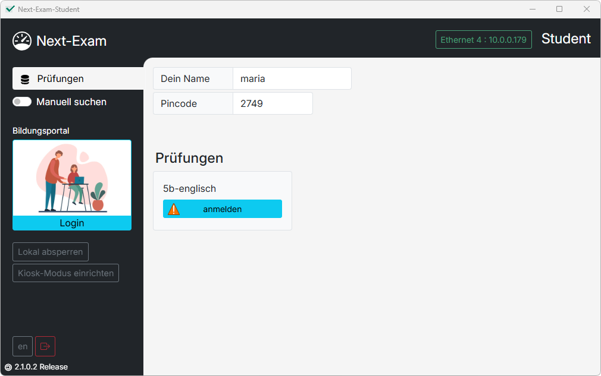

Next-Exam Handbuch
Dieses Handbuch unterstützt Lehrkräfte und Administrator:innen bei der Einrichtung und Verwendung der Next-Exam Prüfungsumgebung. Es basiert auf Next-Exam Version 2.1.
Download: Die aktuelle Version von Next-Exam steht unter https://www.next-exam.at zum Herunterladen bereit.
Sicher prüfen – leicht gemacht
Lehrkräfte erstellen und überwachen Prüfungen, während Schüler:innen in einer abgesicherten Umgebung arbeiten. Je nach Anforderung stehen verschiedene Prüfungsmodi zur Verfügung:
-
Mathematik Prüfungen mit integrierter GeoGebra-Umgebung (Suite und Classic).
-
Sprachen Texteditor mit Formatierungsfunktionen, LanguageTool-Rechtschreibhilfe, Audiodateien und Korrekturrand.
-
Online-Modi Eduvidual/Moodle, Google Forms, Microsoft Forms, Microsoft 365 und beliebige Websites – abgesichert gegen das Verlassen der Prüfungsoberfläche.
-
RDP Zugriff auf Remote-Desktops über den RD Web Client.
-
Lokale VM Prüfungen in einer lokalen virtuellen Maschine (QEMU) am Schüler:innen-Gerät.
-
Active Sheets PDF-Arbeitsblätter mit interaktiven Formularfeldern – direkt ausfüllbar, inklusive Korrekturwerkzeugen für die Lehrkraft.
Zusätzlich kann jede Prüfung statt lokal auch über das Bildungsportal vorbereitet und gestartet werden, und jedes Schüler:innen-Gerät kann unabhängig vom Prüfungsmodus zusätzlich über den Kiosk-Modus auf Betriebssystemebene abgesichert werden.
Was ist Next-Exam?
Next-Exam besteht aus zwei Anwendungen – Teacher und Student.
Next-Exam Teacher
Die Teacher-App bietet eine übersichtliche Steuerungsoberfläche für das Anlegen von Prüfungen, die Verwaltung der verbundenen Geräte und die Live-Überwachung der Prüfung.

Next-Exam Student
Die Student-App dient den Schüler:innen zum Einstieg in die Prüfung. Name, Pincode und gegebenenfalls die Server-Adresse werden angegeben; danach übernimmt die Lehrkraft die Steuerung.
{kind=link}

Erste Prüfung in 10 Minuten
Begriffe und Konzepte
In diesem Abschnitt werden wichtige Begriffe und Konzepte erklärt, die bei der Arbeit mit Next-Exam verwendet werden.
Active Sheets
Active Sheets bezeichnet einen Prüfungsmodus, bei dem interaktive PDF-Arbeitsblätter direkt in Next-Exam bearbeitet werden können.
Abgabe
Mit der Abgabe übermittelt der Student seine bearbeitete Prüfung bzw. die erstellten Prüfungsdokumente an die Lehrkraft.
Arbeitsordner
Der Arbeitsordner ist das lokale Verzeichnis, in dem Next-Exam Prüfungen und zugehörige Daten speichert.
Autodiscovery
Autodiscovery bezeichnet die automatische Erkennung des Prüfungsservers im lokalen Netzwerk. Dadurch muss die Server-Adresse normalerweise nicht manuell eingegeben werden.
Backup
Ein Backup ist eine zusätzliche Sicherung der Prüfungsdaten und Schülerarbeiten. Dadurch können Daten beispielsweise nach einem Neustart oder bei technischen Problemen wiederhergestellt werden.
Bildungsportal (BiP)
Das Bildungsportal (BiP) kann zur Vorbereitung und Konfiguration von Prüfungen verwendet werden. Die eigentliche Prüfung wird anschließend mit Next-Exam durchgeführt.
Geräte absichern
Mit Geräte absichern wird die Prüfungsumgebung auf den Student-Geräten aktiviert. Dadurch wird sichergestellt, dass die Schüler:innen während der Prüfung nur auf die vorgesehenen Funktionen und Inhalte zugreifen können.
Gruppe
Mit Gruppen können Schüler:innen innerhalb einer Prüfung verschiedenen Gruppen zugeordnet werden. Dadurch können beispielsweise unterschiedliche Materialien oder Einstellungen verwendet werden.
Kiosk-Modus
Der Kiosk-Modus schränkt den Zugriff auf das Betriebssystem des Student-Geräts ein. Dadurch wird verhindert, dass während einer Prüfung auf andere Programme oder Systemfunktionen zugegriffen wird.
Lokale VM
Lokale VM steht für lokale virtuelle Maschine. Bei diesem Prüfungsmodus läuft die Prüfungsumgebung innerhalb einer virtuellen Maschine direkt auf dem Student-Gerät.
Materialien
Materialien sind Dateien oder Webseiten, die den Schüler:innen während einer Prüfung zur Verfügung gestellt werden können. Je nach Prüfungsmodus können beispielsweise PDFs, Bilder, Audio-Dateien oder Webseiten verwendet werden.
Mathematik-Modus
Im Mathematik-Modus bearbeiten Schüler:innen ihre Prüfung in einer abgesicherten GeoGebra-Umgebung.
Next-Exam Student
Next-Exam Student ist die Anwendung für Schüler:innen. Sie wird verwendet, um an einer Prüfung teilzunehmen und die Aufgaben innerhalb der vorgegebenen Prüfungsumgebung zu bearbeiten.
Next-Exam Teacher
Next-Exam Teacher ist die Anwendung für Lehrkräfte. Sie wird zur Vorbereitung, Konfiguration und Durchführung von Prüfungen verwendet.
Online-Modus
Im Online-Modus wird eine Webanwendung oder Webseite innerhalb einer abgesicherten Prüfungsumgebung verwendet. Der Zugriff kann dabei auf bestimmte Webseiten oder URLs beschränkt werden.
Pincode
Der Pincode ist ein Zugangscode für eine Prüfung. Schüler:innen verwenden ihn, um sich mit einer Prüfung zu verbinden.
Prüfungsabschnitt
Eine Prüfung kann in mehrere Prüfungsabschnitte unterteilt werden. Für die einzelnen Abschnitte können unterschiedliche Einstellungen und Materialien festgelegt werden.
Prüfungsmodus
Der Prüfungsmodus legt fest, in welcher technischen Umgebung die Schüler:innen eine Prüfung bearbeiten.
Next-Exam unterstützt verschiedene Prüfungsmodi, unter anderem:
- Mathematik
- Sprachen
- Active Sheets
- Online
- RDP
- Lokale VM
Prüfung
Eine Prüfung ist eine in Next-Exam angelegte und konfigurierte Prüfung. Sie enthält unter anderem die Prüfungsabschnitte, Materialien, Gruppen und Einstellungen für die Durchführung.
Prüfungsserver
Der Prüfungsserver stellt die Verbindung zwischen der Teacher-Anwendung und den Student-Geräten her. Über ihn werden die für die Prüfung erforderlichen Informationen und Daten übertragen.
Prüfungszeit
Die Prüfungszeit legt fest, wie lange Schüler:innen für die Bearbeitung einer Prüfung oder eines Prüfungsabschnitts zur Verfügung stehen.
RDP
RDP (Remote Desktop Protocol) ermöglicht den Zugriff auf einen entfernten Desktop. Im RDP-Prüfungsmodus arbeiten Schüler:innen innerhalb einer von der Lehrkraft bereitgestellten Remote-Desktop-Umgebung.
Safe Exam Browser (SEB)
Der Safe Exam Browser (SEB) ist eine Software zur Absicherung von Prüfungsumgebungen. Next-Exam unterstützt unter anderem einen SEB-Kompatibilitätsmodus für bestimmte Online-Prüfungsszenarien.
Server-Adresse
Die Server-Adresse bezeichnet die Netzwerkadresse des Prüfungsservers. Falls der Prüfungsserver nicht automatisch gefunden wird, kann die Adresse in der Student-Anwendung manuell eingegeben werden.
Signierte Abgabe
Bei einer signierten Abgabe wird die abgegebene Datei kryptografisch signiert. Dadurch kann überprüft werden, ob die Abgabe nach ihrer Erstellung verändert wurde.
Sprachen-Modus
Im Sprachen-Modus bearbeiten Schüler:innen ihre Aufgaben in einem abgesicherten Texteditor. Je nach Konfiguration können zusätzliche Funktionen wie LanguageTool oder Audio-Dateien zur Verfügung stehen.
Student
Ein Student ist eine Person, die an einer Prüfung teilnimmt und die Prüfungsaufgaben mit Next-Exam Student bearbeitet.
Teacher
Ein Teacher ist eine Lehrkraft, die eine Prüfung mit Next-Exam vorbereitet, konfiguriert und durchführt.
QEMU
QEMU ist eine Software zur Virtualisierung und Emulation von Computersystemen. Im Prüfungsmodus Lokale VM wird QEMU verwendet, um die virtuelle Prüfungsumgebung auf dem Student-Gerät auszuführen.